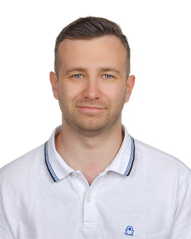

Favori Gıda A.Ş.
Data Analyst
Data analysis and reporting with SQL Server, Power BI, Excel and Python.

Computer Engineer (Master’s)
TürkiyeI’m a computer engineer working in computer vision and AI. I develop software that turns images and data into useful applications.
I’m pursuing a master’s degree in Smart City and Transportation Technologies at Gebze Technical University. My thesis investigates how to analyse and predict parking occupancy from camera footage. I also work on local AI and data analytics projects.
Data Analyst
Data analysis and reporting with SQL Server, Power BI, Excel and Python.
Mobile Software Developer
Mobile application development with Flutter.
AI R&D Intern
Computer vision, image processing and mobile application work.
Software Engineering Intern
Development involving C#, .NET, SIP and VoIP systems.
Embedded Software Intern
Work with C++, Qt, QML, Linux and CAN-based systems.
Intern
Work involving 5G, IoT and mobile network security.
Data Scientist
Work on aircraft maintenance, process planning and data analysis with Excel.
Intern
Work on e-commerce, web design and C# development.
Intern
Work on e-commerce, web design and C# development.
Analysis of parking occupancy from camera footage and short-term occupancy prediction; master’s thesis.
Segmentation, tiling/SAHI, synthetic data and evidence image workflows for small defects.
A project currently being developed with AYVOS.
Smart City and Transportation Technologies · Master’s
Computer Engineering · Bachelor’s
Computer Programming · Associate degree
Have a project, collaboration idea or question? Leave me a message.